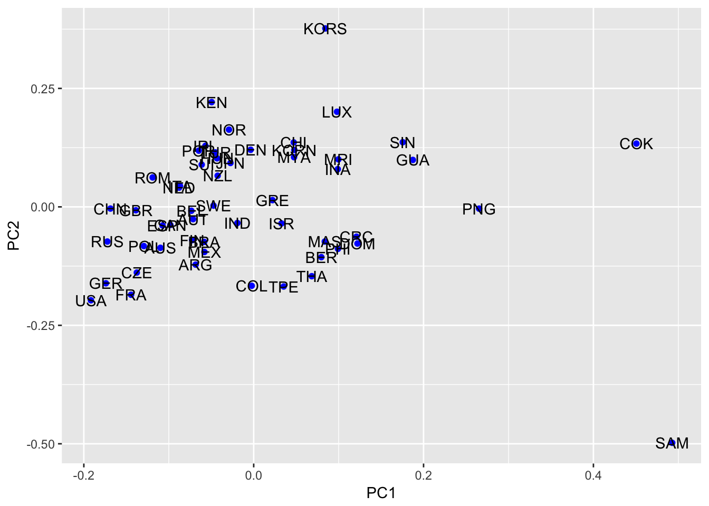
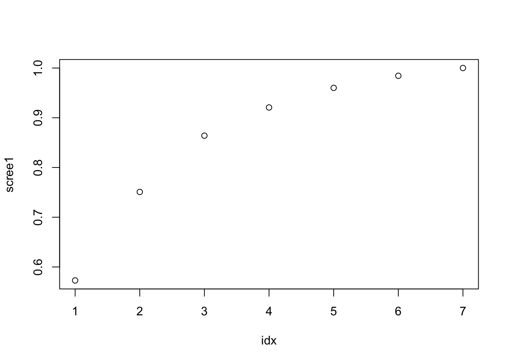
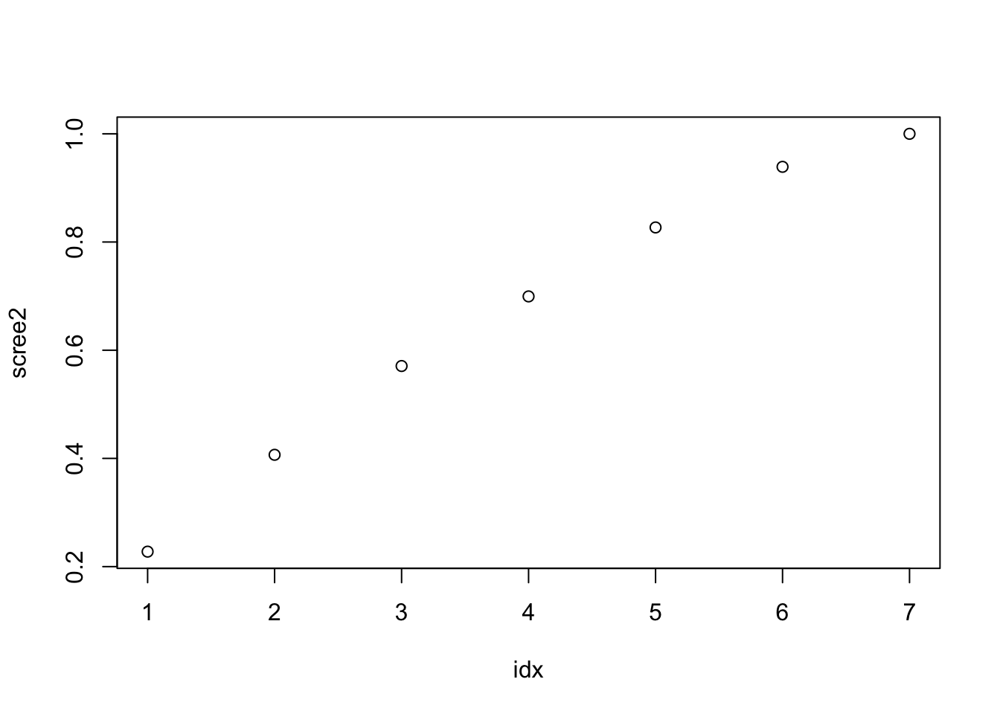
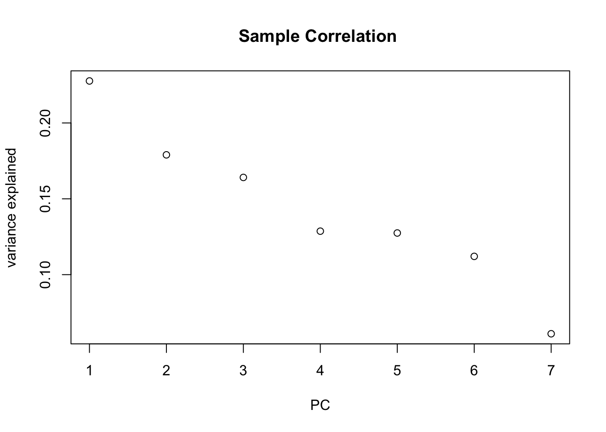
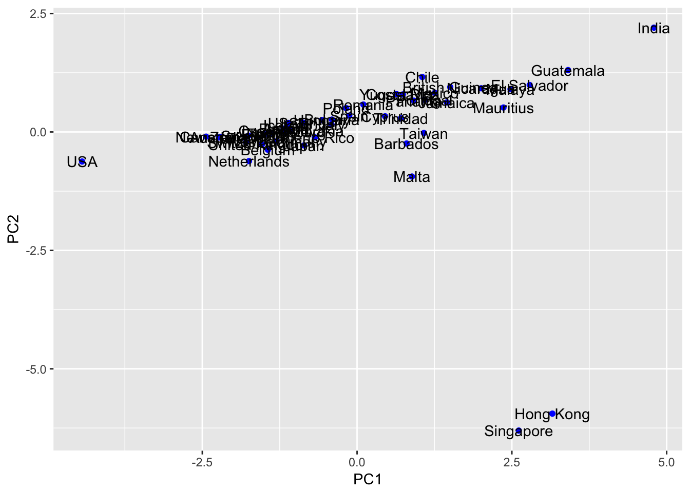
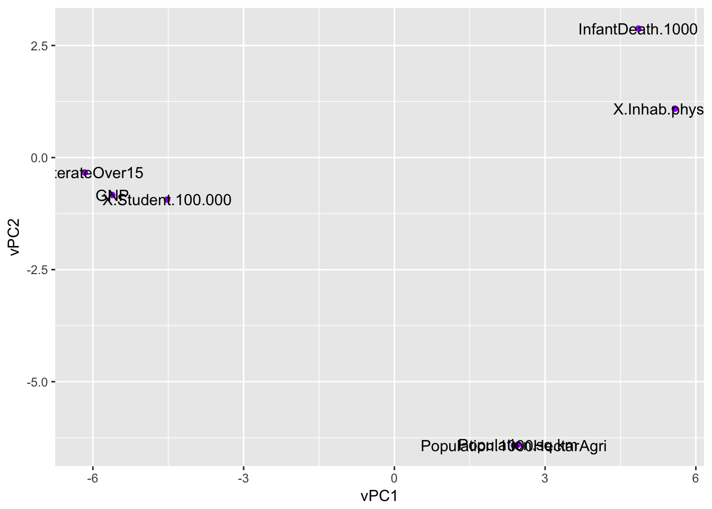
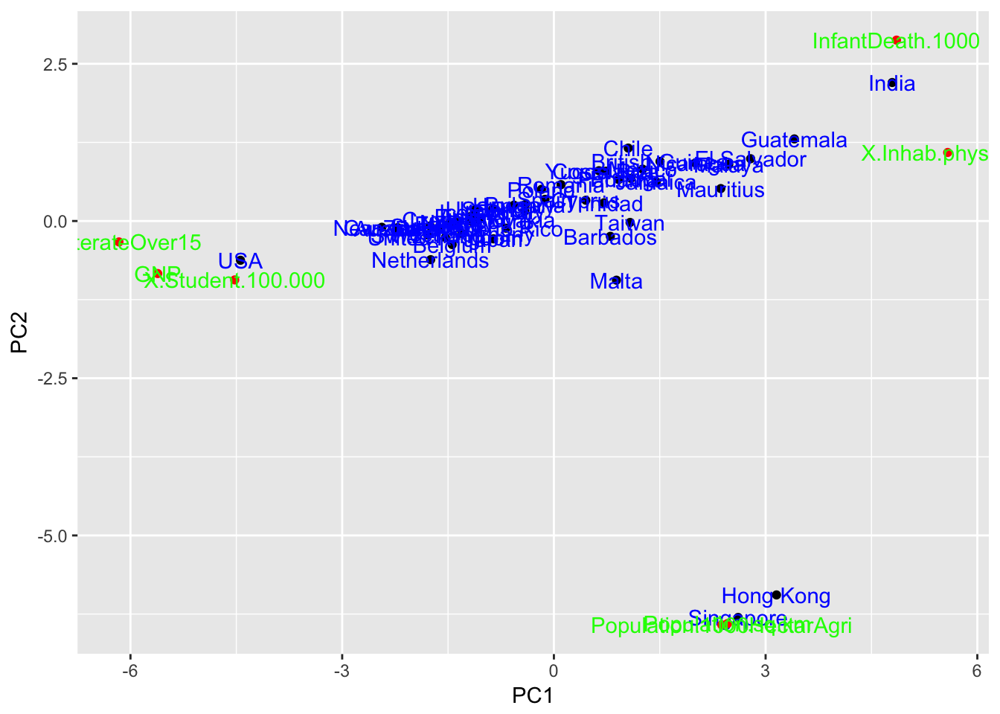
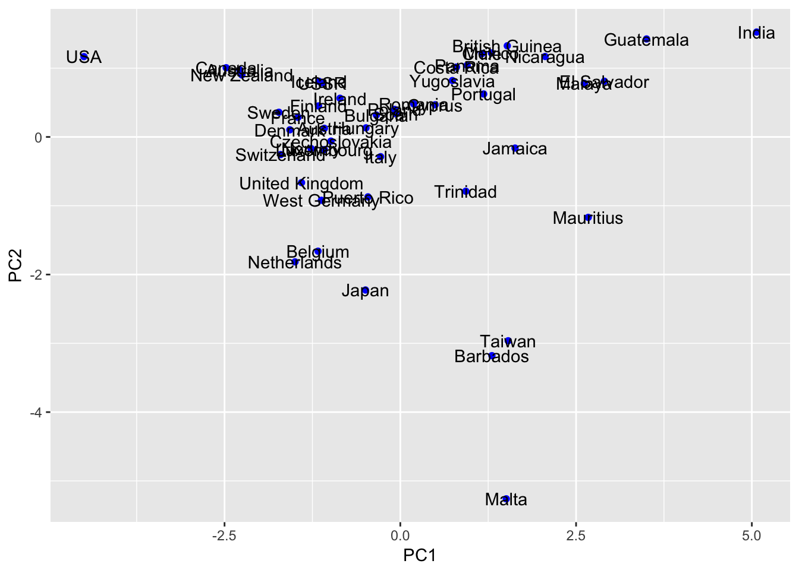

hw2
Zihao_Wang
11/3/2018
Last updated: 2018-11-03
workflowr checks: (Click a bullet for more information)-
✖ R Markdown file: uncommitted changes
The R Markdown is untracked by Git. To know which version of the R Markdown file created these results, you’ll want to first commit it to the Git repo. If you’re still working on the analysis, you can ignore this warning. When you’re finished, you can runwflow_publishto commit the R Markdown file and build the HTML. -
✔ Environment: empty
Great job! The global environment was empty. Objects defined in the global environment can affect the analysis in your R Markdown file in unknown ways. For reproduciblity it’s best to always run the code in an empty environment.
-
✔ Seed:
set.seed(20181103)The command
set.seed(20181103)was run prior to running the code in the R Markdown file. Setting a seed ensures that any results that rely on randomness, e.g. subsampling or permutations, are reproducible. -
✔ Session information: recorded
Great job! Recording the operating system, R version, and package versions is critical for reproducibility.
-
Great! You are using Git for version control. Tracking code development and connecting the code version to the results is critical for reproducibility. The version displayed above was the version of the Git repository at the time these results were generated.✔ Repository version: d671333
Note that you need to be careful to ensure that all relevant files for the analysis have been committed to Git prior to generating the results (you can usewflow_publishorwflow_git_commit). workflowr only checks the R Markdown file, but you know if there are other scripts or data files that it depends on. Below is the status of the Git repository when the results were generated:
Note that any generated files, e.g. HTML, png, CSS, etc., are not included in this status report because it is ok for generated content to have uncommitted changes.Ignored files: Ignored: .Rproj.user/ Untracked files: Untracked: analysis/HW2_DataPractice.Rmd Untracked: data/hw2/ Untracked: docs/finm331-hw2.pdf
rm(list=ls())
set.seed(12345)
options(warn = -1)
knitr::opts_knit$set(root.dir = '~/Desktop/finm331-fall-2018/analysis/')
library(ggplot2)1
track = read.table("../data/hw2/p1.txt")
colnames(track) = c("Country","100m","200m","400m","800m","1500m","3000m","Marathon")
#track$Country = as.factor(track$Country)
X = track[,colnames(track) != "Country"]
X = as.matrix(X)
n = nrow(X)
p = ncol(X)
## sample means
### of course the sample means for "Country" variable
Xbar = (t(replicate(n,1)) %*% X)/n
## sample covariance and correlation matrix
S = (t(X) %*% (diag(replicate(n,1)) - matrix(replicate(n*n,1), nrow = n)/n) %*% X)/(n-1)
D = diag(1/sqrt(diag(S)))
R = D %*% S %*% D
## correlation matrix of the log of data
X_log = log(X)
S_log = (t(X_log) %*% (diag(replicate(n,1)) - matrix(replicate(n*n,1), nrow = n)/n) %*% X_log)/(n-1)
D_log = diag(1/sqrt(diag(S_log)))
R_log = D_log %*% S_log %*% D_log
format(Xbar,digits = 2) 100m 200m 400m 800m 1500m 3000m Marathon
[1,] " 11.4" " 23.1" " 52.0" " 2.0" " 4.2" " 9.1" "153.6" format(S,digits = 2) 100m 200m 400m 800m 1500m 3000m
100m "1.6e-01" "3.4e-01" "8.9e-01" "2.8e-02" "8.8e-02" "2.3e-01"
200m "3.4e-01" "8.6e-01" "2.2e+00" "6.6e-02" "2.1e-01" "5.5e-01"
400m "8.9e-01" "2.2e+00" "6.8e+00" "1.8e-01" "5.2e-01" "1.4e+00"
800m "2.8e-02" "6.6e-02" "1.8e-01" "7.5e-03" "2.2e-02" "6.1e-02"
1500m "8.8e-02" "2.1e-01" "5.2e-01" "2.2e-02" "9.9e-02" "2.4e-01"
3000m "2.3e-01" "5.5e-01" "1.4e+00" "6.1e-02" "2.4e-01" "6.6e-01"
Marathon "4.4e+00" "1.0e+01" "2.9e+01" "1.2e+00" "3.3e+00" "1.1e+01"
Marathon
100m "4.4e+00"
200m "1.0e+01"
400m "2.9e+01"
800m "1.2e+00"
1500m "3.3e+00"
3000m "1.1e+01"
Marathon "2.7e+02"format(R,digits = 2) [,1] [,2] [,3] [,4] [,5] [,6] [,7]
[1,] "1.00" "0.94" "0.87" "0.81" "0.71" "0.73" "0.67"
[2,] "0.94" "1.00" "0.91" "0.82" "0.72" "0.73" "0.68"
[3,] "0.87" "0.91" "1.00" "0.81" "0.64" "0.67" "0.68"
[4,] "0.81" "0.82" "0.81" "1.00" "0.80" "0.87" "0.85"
[5,] "0.71" "0.72" "0.64" "0.80" "1.00" "0.95" "0.63"
[6,] "0.73" "0.73" "0.67" "0.87" "0.95" "1.00" "0.80"
[7,] "0.67" "0.68" "0.68" "0.85" "0.63" "0.80" "1.00"format(R_log,digits = 2) [,1] [,2] [,3] [,4] [,5] [,6] [,7]
[1,] "1.00" "0.94" "0.87" "0.80" "0.72" "0.73" "0.67"
[2,] "0.94" "1.00" "0.91" "0.82" "0.74" "0.74" "0.68"
[3,] "0.87" "0.91" "1.00" "0.81" "0.66" "0.69" "0.68"
[4,] "0.80" "0.82" "0.81" "1.00" "0.82" "0.87" "0.86"
[5,] "0.72" "0.74" "0.66" "0.82" "1.00" "0.95" "0.67"
[6,] "0.73" "0.74" "0.69" "0.87" "0.95" "1.00" "0.83"
[7,] "0.67" "0.68" "0.68" "0.86" "0.67" "0.83" "1.00"Comment
It is surprising that the correlation matrix of the log data is almost the same as that of the original data.
4 (Sample PCA)
(a)
eigdec = eigen(R)
print(paste0("sum of eigenvalues: ", sum(eigdec$values), " while the number of feature p: ",p))[1] "sum of eigenvalues: 7 while the number of feature p: 7"(b)
1
## standardize X (call it Z)
Z = (X - t(replicate(n,as.numeric(Xbar)))) %*% D
## svd
svd_Z = svd(Z)
pc1 = svd_Z$v[,1]
q1 = eigdec$vectors[,1]
print("ratio of pc1 from svd to pc1 from evd is: ")[1] "ratio of pc1 from svd to pc1 from evd is: "pc1/q1[1] 1 1 1 1 1 1 12
Use the formula \(\lambda_k = \frac{1}{n-1} \sigma_k^2\), we know the proportion is \(\frac{\lambda_k}{\lambda_1+...+\lambda_p} = \frac{\sigma_k^2}{\sigma_1^2+...+\sigma_p^2}\). So the ratio explained by the first two pcs is:
sum(svd_Z$d[1:2]^2)/sum(svd_Z$d^2)[1] 0.9012013(c)
1
Score = svd_Z$u[,1:2]
Score = as.data.frame(Score)
Score = cbind(as.factor(track$Country),Score)
names(Score) <- c("Country","PC1","PC2")
ggplot(Score, aes(x=PC1, y = PC2, label = Country))+
geom_point(color = "blue")+
geom_text()
2
Score = Score[order(Score$PC1),]
print("top 6 in PC1: ")[1] "top 6 in PC1: "head(Score$Country,6)[1] USA GER RUS CHN FRA GBR
54 Levels: ARG AUS AUT BEL BER BRA CAN CHI CHN COK COL CRC CZE DEN ... USAprint("last 3 in PC1: ")[1] "last 3 in PC1: "tail(Score$Country,3)[1] PNG COK SAM
54 Levels: ARG AUS AUT BEL BER BRA CAN CHI CHN COK COL CRC CZE DEN ... USAComment:
The list is similar to the rank of the number of medals won in the Olympic Games. “Athletic Excellence” is a very subjective definition. If I define it in terms of the number of top prizes won by a country, then it reflects “Athletic Excellence”.
5 (Scaling effect in sample PCA)
#rm(list = ls())
air = read.table("../data/hw2/p5.txt")
colnames(air) = c("Wind", "Radiation", "CO", "NO", "NO2", "O3", "HC")
n = nrow(air)
p = ncol(air)(a)
X = as.matrix(air)
Xbar = as.numeric((t(replicate(n,1)) %*% X) / n)
Xc = X - t(replicate(n,Xbar))
## PCA on sample covariance matrix
svd_Xc = svd(Xc)
## Scree plot (well, not quite the same)
idx = 1:7
scree1 = sapply(idx, function(i) sum(svd_Xc$d[1:i]))/sum(svd_Xc$d)
plot(idx,scree1)
## standardize data
S = (t(X) %*% (diag(replicate(n,1)) - matrix(replicate(n*n,1), nrow = n)/n) %*% X)/(n-1)
D = diag(1/sqrt(diag(S)))
Z = Xc %*% D
## PCA on sample covariance matrix
svd_Z = svd(Z)
## Scree plot (well, not quite the same)
idx = 1:7
scree2 = sapply(idx, function(i) sum(svd_Z$d[1:i]))/sum(svd_Z$d)
plot(idx,scree2) ### Comment: * In the case of covariance matrix, we need 4 PCs to account for 90% of the variance;
* In the case of correlation matrix, we need 6 PCs to account for 90% of the variance
(b)
plot(svd_Xc$d/sum(svd_Xc$d), ylab = "variance explained", xlab = "PC", main = "Sample Covariance ")
plot(svd_Z$d/sum(svd_Z$d), ylab = "variance explained", xlab = "PC", main = "Sample Correlation ") ## (c) Comment: Without scaling, the variance can be explained by a smaller number of PCs, as opposed to the scaled data.
6
#rm(list = ls())
data <- read.csv("../data/hw2/p6-data.txt", sep = ",", row.names = 1,header = TRUE)(a) standardizing
std_data <- function(X){
n = nrow(X)
p = ncol(X)
Xbar = as.numeric((t(replicate(n,1)) %*% X) / n)
Xc = X - t(replicate(n,Xbar))
S = (t(X) %*% (diag(replicate(n,1)) - matrix(replicate(n*n,1), nrow = n)/n) %*% X)/(n-1)
D = diag(1/sqrt(diag(S)))
Z = Xc %*% D
return(Z)
}
A = as.matrix(data)
Ahat = std_data(A)(b) SVD + PCA scatter plot
svd_Ahat = svd(Ahat)
Score = svd_Ahat$u %*% diag(svd_Ahat$d)
Score = as.data.frame(Score[,1:2])
Score = cbind(as.factor(rownames(data)),Score)
names(Score) <- c("Country_Region","PC1","PC2")
p1 = ggplot(Score, aes(x=PC1, y = PC2, label = Country_Region))+
geom_point(color = "blue")+
geom_text()
p1 ### Comment: There is a common linear relation between PC1 and PC2 for most of the countries, except the two outliers : Hong Kong and Singapore
(c) SVD + variable PCA scatter plot
Score_var = svd_Ahat$v %*% diag(svd_Ahat$d)
Score_var = as.data.frame(Score_var[,1:2])
Score_var = cbind(as.factor(colnames(data)),Score_var)
names(Score_var) <- c("feature","vPC1","vPC2")
p2 = ggplot(Score_var, aes(x=vPC1, y = vPC2, label = feature))+
geom_point(color = "purple")+
geom_text()
p2
(d) Biplot
p1 = ggplot(Score, aes(x=PC1, y = PC2, label = Country_Region))+
geom_point(color = "black")+
geom_text(color = "blue")
p2 = p1 +
geom_point(data = Score_var, aes(x=vPC1,y = vPC2, label = feature), color = "red")+
geom_text(data = Score_var, aes(x=vPC1,y = vPC2, label = feature), color = "green")
p2
Comment:
From the biplot, we can see that HK and Singapore are outliers because of the two features, the “Population.sq.km” and “Population.1000HectarAgri”.
(e) Outlier removed, redo (a), (b)
A_rm = A[! rownames(A) %in% c("Hong Kong","Singapore"),]
Ahat = std_data(A_rm)
svd_Ahat = svd(Ahat)
Score = svd_Ahat$u %*% diag(svd_Ahat$d)
Score = as.data.frame(Score[,1:2])
Score = cbind(as.factor(rownames(A_rm)),Score)
names(Score) <- c("Country_Region","PC1","PC2")
p1 = ggplot(Score, aes(x=PC1, y = PC2, label = Country_Region))+
geom_point(color = "blue")+
geom_text()
p1 ### Comment: Belgium and netherlands are the two European countries closest to Japan.
Session information
sessionInfo()R version 3.4.3 (2017-11-30)
Platform: x86_64-apple-darwin15.6.0 (64-bit)
Running under: macOS High Sierra 10.13
Matrix products: default
BLAS: /Library/Frameworks/R.framework/Versions/3.4/Resources/lib/libRblas.0.dylib
LAPACK: /Library/Frameworks/R.framework/Versions/3.4/Resources/lib/libRlapack.dylib
locale:
[1] en_US.UTF-8/en_US.UTF-8/en_US.UTF-8/C/en_US.UTF-8/en_US.UTF-8
attached base packages:
[1] stats graphics grDevices utils datasets methods base
other attached packages:
[1] ggplot2_2.2.1
loaded via a namespace (and not attached):
[1] Rcpp_0.12.16 knitr_1.20 whisker_0.3-2
[4] magrittr_1.5 workflowr_1.0.1 munsell_0.4.3
[7] colorspace_1.3-2 rlang_0.2.0 stringr_1.3.1
[10] plyr_1.8.4 tools_3.4.3 grid_3.4.3
[13] gtable_0.2.0 R.oo_1.22.0 git2r_0.21.0
[16] htmltools_0.3.6 yaml_2.1.19 lazyeval_0.2.1
[19] rprojroot_1.3-2 digest_0.6.15 tibble_1.4.2
[22] R.utils_2.6.0 evaluate_0.10.1 rmarkdown_1.9
[25] labeling_0.3 stringi_1.2.2 pillar_1.2.2
[28] compiler_3.4.3 scales_0.5.0 backports_1.1.2
[31] R.methodsS3_1.7.1This reproducible R Markdown analysis was created with workflowr 1.0.1
Comment
The sum of eigenvalues of sample correlation matrix is the same as the \(p\), the number of features.